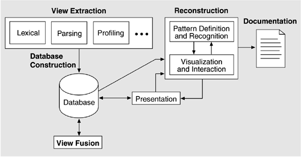

| [ Team LiB ] |
|
10.1 IntroductionThroughout this book we have treated architecture as something largely under your control and shown how to make architectural decisions (and, as we will see in Part Three, how to analyze those decisions) to achieve the goals and requirements in place for a system under development. But there is another side to the picture. Suppose we have a system that already exists, but we do not know its architecture. Perhaps the architecture was never recorded by the original developers. Perhaps it was recorded but the documentation has been lost. Or perhaps it was recorded but the documentation is no longer synchronized with the system after a series of changes. How do we maintain such a system? How do we manage its evolution to maintain the quality attributes that its architecture (whatever it may be) has provided for us? This chapter is about a way to answer these questions using architecture reconstruction, in which the "as-built" architecture of an implemented system is obtained from an existing system. This is done through a detailed analysis of the system using tool support. The tools extract information about the system and aid in building and aggregating successive levels of abstraction. If the tools are successful, the end result is an architectural representation that aids in reasoning about the system. In some cases, it may not be possible to generate a useful representation. This is sometimes the case with legacy systems that have no coherent architectural design to recover (although that in itself is useful to know). Architecture reconstruction is an interpretive, interactive, and iterative process involving many activities; it is not automatic. It requires the skills and attention of both the reverse engineering expert and the architect (or someone who has substantial knowledge of the architecture), largely because architectural constructs are not represented explicitly in the source code. There is no programming language construct for "layer" or "connector" or other architectural elements that we can easily pick out of a source code file. Architectural patterns, if used, are seldom labeled. Instead, architectural constructs are realized by many diverse mechanisms in an implementation, usually a collection of functions, classes, files, objects, and so forth. When a system is initially developed, its high-level design/architectural elements are mapped to implementation elements. Therefore, when we reconstruct those elements, we need to apply the inverses of the mappings. Coming up with those requires architectural insight. Familiarity with compiler construction techniques and utilities such as grep, sed, awk, perl, python, and lex/yacc is also important. The results of architectural reconstruction can be used in several ways. If no documentation exists or if it is out of date, the recovered architectural representation can be used as a basis for redocumenting the architecture, as discussed in Chapter 9. This approach can also be used to recover the as-built architecture, to check conformance against an "as-designed" architecture. This assures us that our maintainers (or our developers, for that matter) have followed the architectural edicts set forth for them and are not eroding the architecture, breaking down abstractions, bridging layers, compromising information hiding, and so forth. The reconstruction can also be used as the basis for analyzing the architecture (see Chapters 11 and 12) or as a starting point for re-engineering the system to a new desired architecture. Finally, the representation can be used to identify elements for re-use or to establish an architecture-based software product line (see Chapter 14). Architecture reconstruction has been used in a variety of projects ranging from MRI scanners to public telephone switches and from helicopter guidance systems to classified NASA systems. It has been used
THE WORKBENCH APPROACHArchitecture reconstruction requires tool support, but no single tool or tool set is always adequate to carry it out. For one thing, tools tend to be language-specific and we may encounter any number of languages in the artifacts we examine. A mature MRI scanner, for example, can contain software written in 15 languages. For another thing, data extraction tools are imperfect; they often return incomplete results or false positives, and so we use a selection of tools to augment and check on each other. Finally, the goals of reconstruction vary, as discussed above. What you wish to do with the recovered documentation will determine what information you need to extract, which in turn will suggest different tools. Taken together, these have led to a particular design philosophy for a tool set to support architecture reconstruction known as the workbench. A workbench should be open (easy to integrate new tools as required) and provide a lightweight integration framework whereby tools added to the tool set do not affect the existing tools or data unnecessarily. An example of a workbench, which we will use to illustrate several of the points in this chapter, is Dali, developed at the SEI. For Further Reading at the end of the chapter describes others. RECONSTRUCTION ACTIVITIESSoftware architecture reconstruction comprises the following activities, carried out iteratively:
As you might expect, the activities are highly iterative. Figure 10.1 depicts the architecture reconstruction activities and how information flows among them. Figure 10.1. Architecture reconstruction activities. (The arrows show how information flows among the activities.) The reconstruction process needs to have several people involved. These include the person doing the reconstruction (reconstructor) and one or more individuals who are familiar with the system being reconstructed (architects and software engineers). The reconstructor extracts the information from the system and either manually or with the use of tools abstracts the architecture from it. The architecture is obtained by the reconstructor through a set of hypotheses about the system. These hypotheses reflect the inverse mappings from the source artifacts to the design (ideally the opposite of the design mappings). They are tested by generating the inverse mappings and applying them to the extracted information and validating the result. To most effectively generate these hypotheses and validate them, people familiar with the system must be involved, including the system architect or engineers who have worked on it (who initially developed it or who currently maintain it). In the following sections, the various activities of architecture reconstruction are outlined in more detail along with some guidelines for each. Most of these guidelines are not specific to the use of a particular workbench and would be applicable even if the architecture reconstruction was carried out manually. |
| [ Team LiB ] |
|